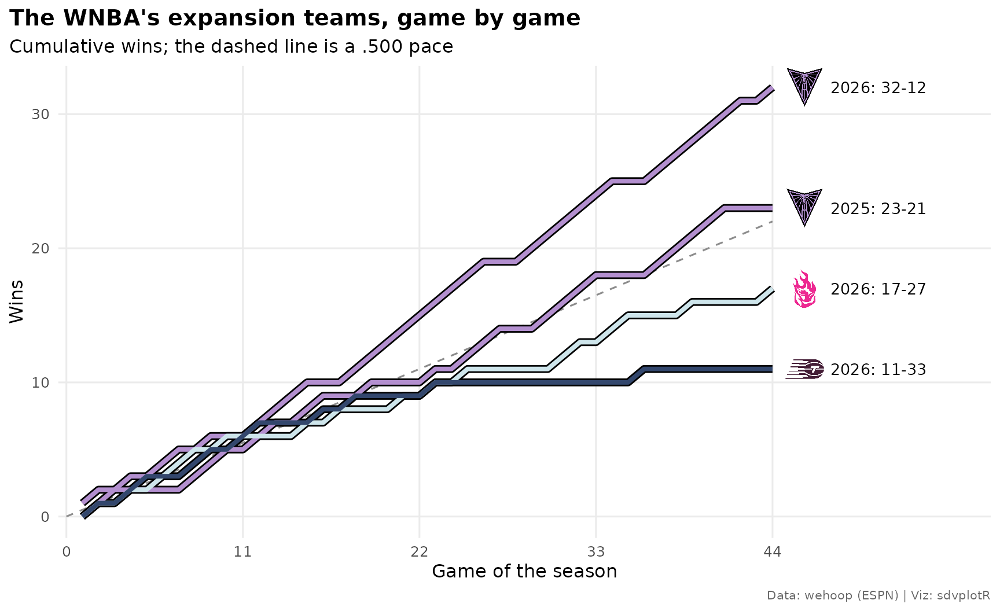
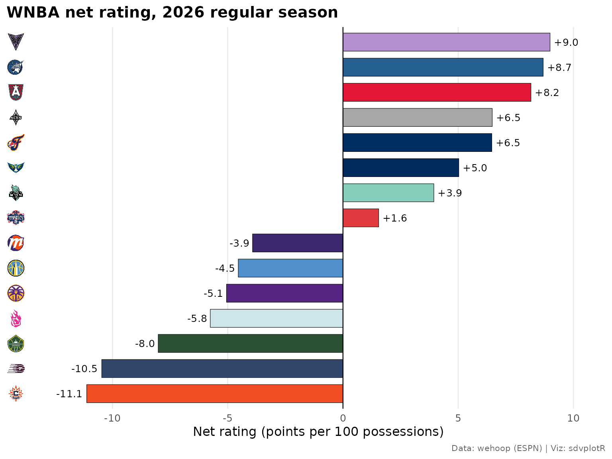
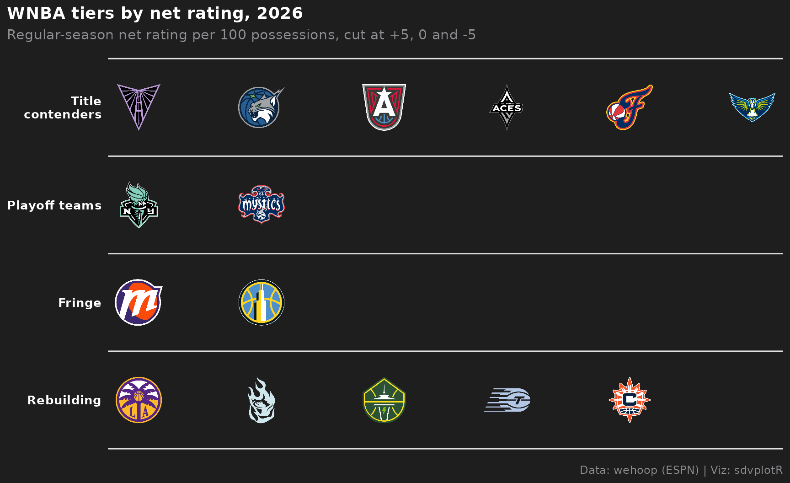
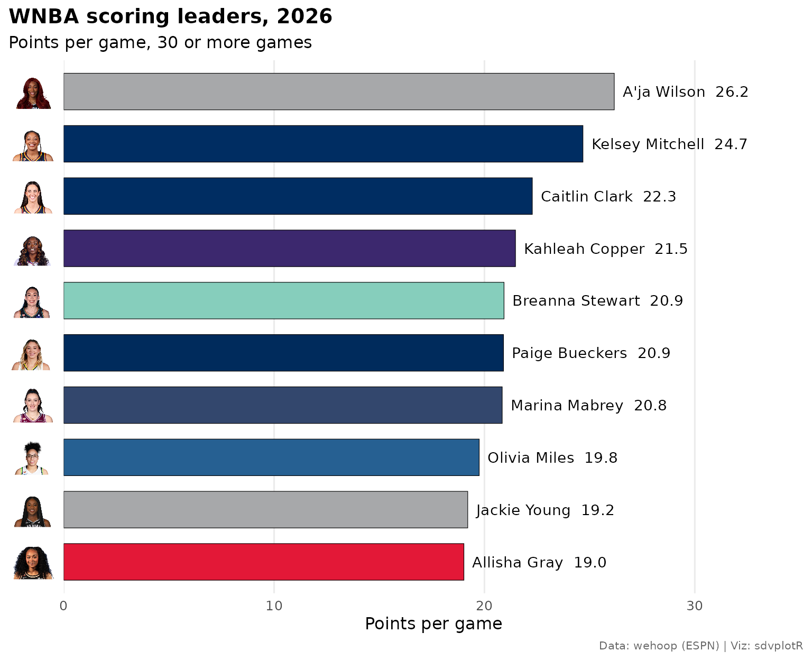
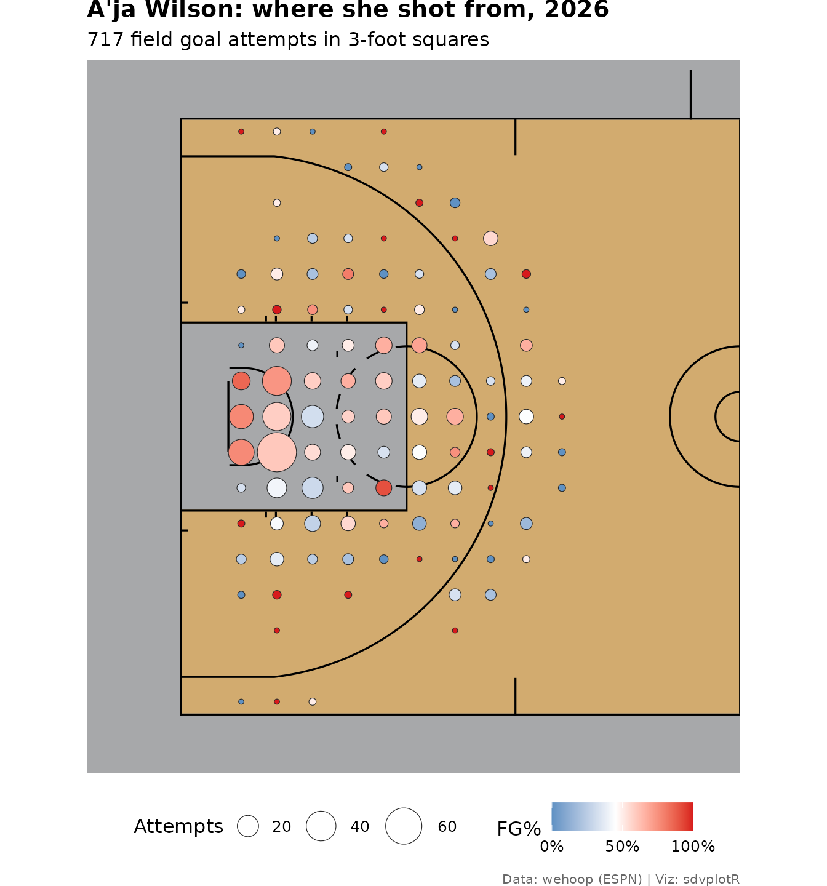
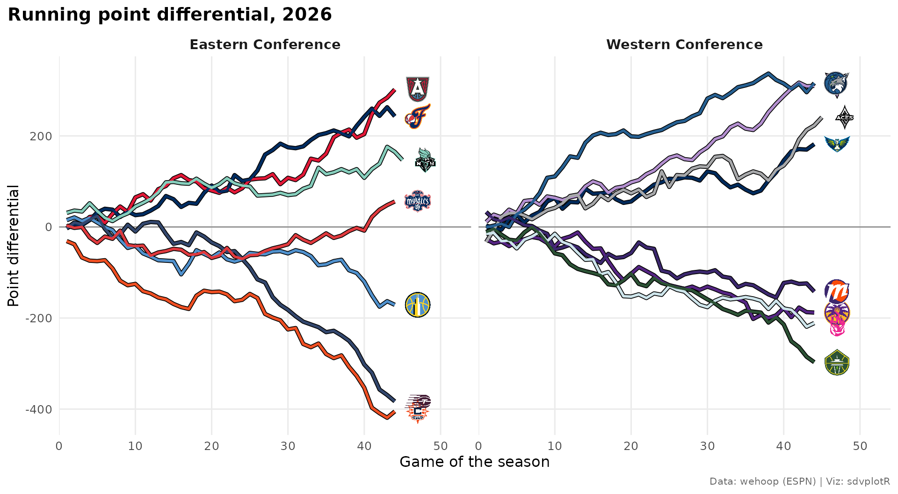
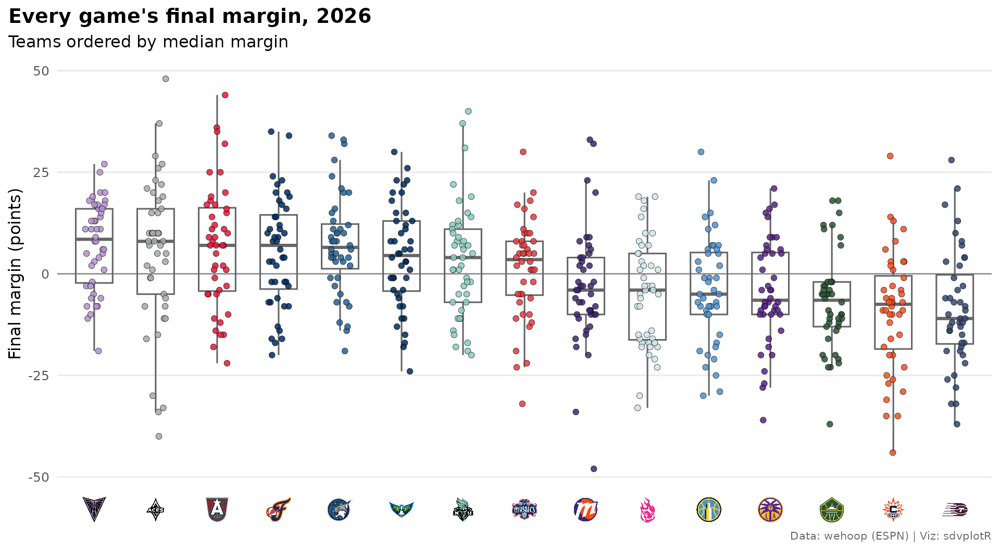
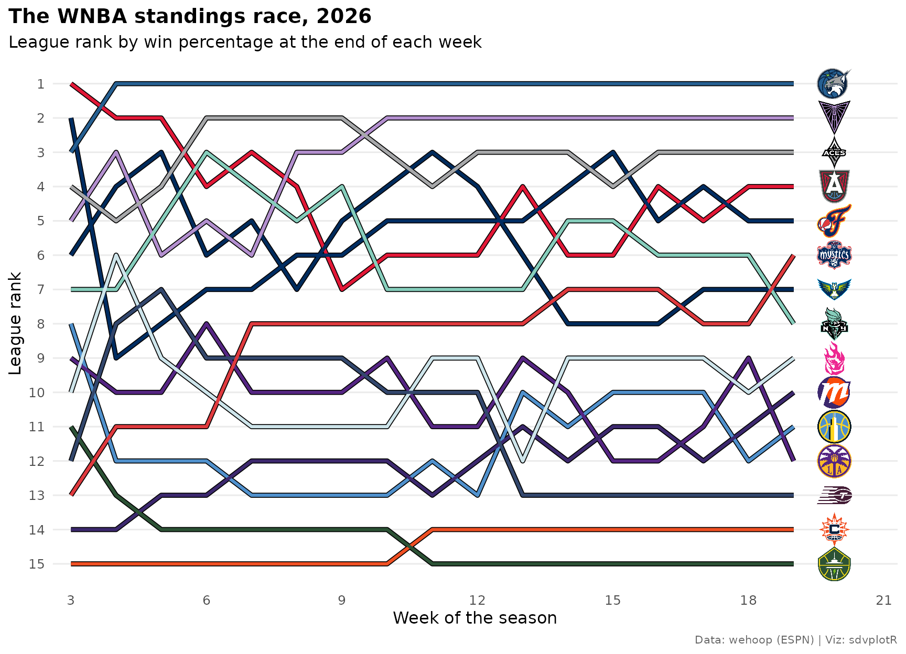

On this page
Ten charts and tables from the 2026 WNBA regular season, the league’s
first with 15 teams: an offense-vs-defense quadrant, the expansion
teams’ win races, net-rating bars with logos on the axis, tiers, a
scoring leaderboard with headshots as axis labels, a binned shot chart,
a standings table, running point differential by conference,
game-by-game margins and a season-long bump chart. Every number comes
from wehoop’s ESPN
release files on GitHub (load_wnba_*()), so nothing here
calls stats.wnba.com.
Setup
library(sdvplotR)
library(ggplot2)
library(dplyr)
library(tidyr)
library(gt)
season <- 2026
source_note <- "Data: wehoop (ESPN) | Viz: sdvplotR"
theme_set(
theme_minimal(base_size = 12) +
theme(
plot.title = element_text(face = "bold"),
plot.title.position = "plot",
plot.caption = element_text(color = "grey40", size = 8),
plot.caption.position = "plot",
panel.grid.minor = element_blank()
)
)The team box score has one row per team per game;
season_type 2 is the regular season. 2025 is loaded too,
for Golden State’s first season. ESPN files each All-Star Game as a
regular-season game between two teams that aren’t WNBA clubs, so an
inner join on the ESPN team id to team_reference("wnba")
drops them, and adds each team’s sdvplotR abbreviation and
conference.
wnba_teams <- team_reference("wnba") |>
select(team_id = espn_team_id, team = team_abbr, conference)
box_all <- wehoop::load_wnba_team_box(seasons = c(season - 1, season)) |>
filter(season_type == 2) |>
inner_join(wnba_teams, by = "team_id")
box <- filter(box_all, season == !!season)
count(box, team, name = "games") |>
count(games, name = "teams")
#> # A tibble: 2 × 2
#> games teams
#> <int> <int>
#> 1 44 13
#> 2 45 2The Commissioner’s Cup final is filed as a regular-season game as well, which is why two teams show 45 games. It stays in the box scores (it was played) but does not count in the standings in example 7.
1. Offense vs defense, with logos
Points scored and allowed per 100 possessions, with possessions estimated from the box score (FGA - OREB + TOV + 0.44 x FTA) and averaged with the opponent’s estimate for the same game. Defensive rating is points allowed, so its axis is reversed to put good defenses on top.
games <- box |>
mutate(
poss = field_goals_attempted - offensive_rebounds +
coalesce(total_turnovers, turnovers) + 0.44 * free_throws_attempted
)
games <- games |>
inner_join(
games |> select(game_id, opponent_team_id = team_id, opp_poss = poss),
by = c("game_id", "opponent_team_id")
) |>
mutate(game_poss = (poss + opp_poss) / 2)
ratings <- games |>
group_by(team, conference) |>
summarise(
games = n(),
ortg = 100 * sum(team_score) / sum(game_poss),
drtg = 100 * sum(opponent_team_score) / sum(game_poss),
.groups = "drop"
) |>
mutate(net = ortg - drtg) |>
arrange(desc(net), team)
stopifnot(nrow(ratings) == 15, !anyNA(ratings$net))
x_lim <- range(ratings$ortg) + c(-1.5, 1.5)
y_lim <- range(ratings$drtg) + c(-2, 1.5)
ggplot(ratings, aes(ortg, drtg)) +
geom_mean_lines(
aes(x0 = ortg, y0 = drtg),
color = "grey60", linetype = "dashed", linewidth = 0.4
) +
geom_sdv_logos(aes(team = team), sport = "wnba", width = 0.075) +
annotate(
"text",
x = x_lim[c(2, 1, 2, 1)], y = y_lim[c(1, 1, 2, 2)],
hjust = c(1, 0, 1, 0), vjust = c(1.3, 1.3, -0.4, -0.4),
label = c("Good offense, good defense", "Defense first", "Offense first", "Struggling"),
color = "grey45", fontface = "italic", size = 3.5
) +
scale_x_continuous(expand = expansion(0)) +
scale_y_reverse(expand = expansion(0)) +
expand_limits(x = x_lim, y = y_lim) +
labs(
title = paste("WNBA offense vs defense,", season, "regular season"),
x = "Offensive rating (points per 100 possessions)",
y = "Defensive rating (points allowed per 100)",
caption = source_note
)
2. The expansion teams, game by game
Golden State joined in 2025, Portland and Toronto in 2026. Cumulative wins by game number put all four seasons on one chart; the dashed line is a .500 pace. Portland’s primary color is a pale ice blue, so every line is drawn over a black one that outlines it on white.
runs <- box_all |>
filter(team == "GS" | (team %in% c("POR", "TOR") & season == 2026)) |>
arrange(season, team, game_date) |>
group_by(season, team) |>
mutate(game_no = row_number(), wins = cumsum(team_winner)) |>
ungroup() |>
mutate(run = paste(team, season))
ends <- runs |>
group_by(run) |>
slice_max(game_no, n = 1) |>
ungroup()
ggplot(runs, aes(game_no, wins, group = run)) +
annotate("segment", x = 0, y = 0, xend = 44, yend = 22, color = "grey55", linetype = "dashed") +
geom_line(color = "black", linewidth = 2.4) +
geom_line(aes(color = team), linewidth = 1.4) +
geom_sdv_logos(aes(x = game_no + 2, team = team), data = ends, sport = "wnba", width = 0.045) +
geom_text(
aes(x = game_no + 3.6, label = sprintf("%s: %d-%d", season, wins, game_no - wins)),
data = ends, hjust = 0, size = 3.6
) +
scale_color_sdv(sport = "wnba") +
scale_x_continuous(breaks = seq(0, 44, 11), expand = expansion(add = c(0.5, 10))) +
labs(
title = "The WNBA's expansion teams, game by game",
subtitle = "Cumulative wins; the dashed line is a .500 pace",
x = "Game of the season",
y = "Wins",
caption = source_note
) +
theme(legend.position = "none")
3. Net rating, with logos on the axis
scale_y_sdv() turns a discrete vertical axis of
abbreviations into logos and theme_y_sdv() lets the axis
draw them. The factor order sets the bar order: here the best net rating
sits on top.
ratings |>
mutate(team = factor(team, levels = rev(team))) |>
ggplot(aes(net, team, fill = team)) +
geom_col(width = 0.72, color = "black", linewidth = 0.2) +
geom_vline(xintercept = 0, linewidth = 0.4) +
geom_text(
aes(label = sprintf("%+.1f", net), hjust = if_else(net > 0, -0.15, 1.15)),
size = 3.4
) +
scale_fill_sdv(sport = "wnba") +
scale_y_sdv(sport = "wnba", size = 18) +
scale_x_continuous(expand = expansion(mult = 0.12)) +
labs(
title = paste("WNBA net rating,", season, "regular season"),
x = "Net rating (points per 100 possessions)",
y = NULL,
caption = source_note
) +
theme_y_sdv() +
theme(legend.position = "none", panel.grid.major.y = element_blank())
4. Team tiers from net rating
sdv_team_tiers() draws a tier list from
tier_no and team. The tiers here are cut from
the net ratings above, so they are the season’s numbers. Its default
background is dark, where each team draws its dark-background logo
(Toronto’s plum mark turns light blue), and alpha = 1 draws
the logos at full strength.
tiers <- ratings |>
mutate(tier_no = 5L - cut(net, c(-Inf, -5, 0, 5, Inf), labels = FALSE, right = FALSE)) |>
arrange(tier_no, desc(net)) |>
select(tier_no, team)
sdv_team_tiers(
tiers,
sport = "wnba",
title = paste("WNBA tiers by net rating,", season),
subtitle = "Regular-season net rating per 100 possessions, cut at +5, 0 and -5",
caption = source_note,
tier_desc = c("1" = "Title contenders", "2" = "Playoff teams", "3" = "Fringe", "4" = "Rebuilding"),
alpha = 1
)
5. Scoring leaders, with headshots as the axis labels
scale_y_sdv_headshots() draws a headshot for each ESPN
athlete id on a discrete axis, the way scale_y_sdv() draws
logos. A thin black edge keeps the pale team colors (Portland, New York)
visible. Players need 30 games.
players <- wehoop::load_wnba_player_box(seasons = season) |>
semi_join(distinct(box, game_id), by = "game_id") |>
filter(!did_not_play)
scorers <- players |>
arrange(game_date) |>
group_by(athlete_id, athlete_display_name) |>
summarise(games = n(), team = last(team_abbreviation), ppg = mean(points), .groups = "drop") |>
filter(games >= 30) |>
arrange(desc(ppg), athlete_id) |>
head(10)
scorers |>
mutate(athlete_id = factor(athlete_id, levels = rev(athlete_id))) |>
ggplot(aes(ppg, athlete_id)) +
geom_col(aes(fill = team), width = 0.7, color = "black", linewidth = 0.2) +
geom_text(
aes(x = ppg + 0.4, label = sprintf("%s %.1f", athlete_display_name, ppg)),
hjust = 0, size = 3.8
) +
scale_fill_sdv(sport = "wnba") +
scale_y_sdv_headshots(sport = "wnba", size = 34) +
scale_x_continuous(limits = c(0, max(scorers$ppg) + 9), expand = expansion(0)) +
labs(
title = paste("WNBA scoring leaders,", season),
subtitle = "Points per game, 30 or more games",
x = "Points per game",
y = NULL,
caption = source_note
) +
theme_y_sdv() +
theme(legend.position = "none", panel.grid.major.y = element_blank())
6. A binned shot chart on a team-colored court
load_wnba_shots() holds ESPN’s shot locations, which
wehoop already converts to feet on a center-court frame, the frame
sdv_surface()’s sportyR court uses. They need no
conversion; sdv_court_coords() is only for the
stats.wnba.com legacy frame
(x_legacy/y_legacy, tenths of a foot around
the hoop). Fold the right-basket shots onto the left one, then bin them
into 3-foot squares: the size of each point is the attempts from there,
its color the field goal percentage.
star <- slice(scorers, 1)
zones <- wehoop::load_wnba_shots(seasons = season) |>
semi_join(distinct(box, game_id), by = "game_id") |>
filter(athlete_id_1 == star$athlete_id, !grepl("Free Throw", type_text)) |>
mutate(
right = coordinate_x > 0,
x = if_else(right, -coordinate_x, coordinate_x),
y = if_else(right, -coordinate_y, coordinate_y)
) |>
group_by(x = round(x / 3) * 3, y = round(y / 3) * 3) |>
summarise(attempts = n(), fg_pct = mean(scoring_play), .groups = "drop")
sdv_surface("wnba", star$team, display_range = "defense") +
geom_point(
aes(x, y, size = attempts, fill = fg_pct),
data = zones, shape = 21, color = "grey15", stroke = 0.3
) +
scale_size_area(max_size = 11, name = "Attempts") +
scale_fill_gradient2(
low = "#2C7BB6", mid = "white", high = "#D7191C", midpoint = 0.45,
limits = c(0, 1), breaks = c(0, 0.5, 1), labels = scales::percent, name = "FG%"
) +
labs(
title = paste0(star$athlete_display_name, ": where she shot from, ", season),
subtitle = sprintf("%d field goal attempts in 3-foot squares", sum(zones$attempts)),
caption = source_note
) +
theme(legend.position = "bottom", plot.title = element_text(face = "bold"))
7. A standings table with logos and a playoff line
ESPN’s standings come long (one row per team and stat), so pivot them
wide. The clincher column marks the eight teams that
clinched a playoff spot with an x, and they are the eight
best records, so one league-wide table with a cut line after eighth
tells the story.
standings <- wehoop::load_wnba_standings(seasons = season) |>
select(group_name, team_abbreviation, team_short_display_name, stat_name, display_value) |>
pivot_wider(names_from = stat_name, values_from = display_value)
standings |>
mutate(
conf = sub(" Conference", "", group_name),
logo = team_abbreviation,
pct = as.numeric(winPercent)
) |>
arrange(desc(pct), desc(as.numeric(differential)), team_abbreviation) |>
mutate(rank = row_number()) |>
select(rank, logo, team_short_display_name, conf, wins, losses, winPercent, Home, Road, `Last Ten Games`, differential) |>
gt() |>
tab_header(
title = paste("WNBA standings,", season),
subtitle = "The eight best records made the playoffs"
) |>
cols_label(
rank = "", logo = "", team_short_display_name = "Team", conf = "Conf", wins = "W",
losses = "L", winPercent = "Pct", `Last Ten Games` = "L10",
differential = "Diff"
) |>
tab_source_note(source_note) |>
gt_sdv_logos(columns = logo, sport = "wnba", height = 26) |>
gt_theme_athletic() |>
cols_align("left", columns = team_short_display_name) |>
gt_cutline(after = 8, label = "Playoffs", label_position = "above")| WNBA standings, 2026 | ||||||||||
| The eight best records made the playoffs | ||||||||||
| Team | Conf | W | L | Pct | Home | Road | L10 | Diff | ||
|---|---|---|---|---|---|---|---|---|---|---|
| 1 |  |
Lynx | Western | 33 | 11 | .750 | 15-7 | 18-4 | 6-4 | +7.1 |
| 2 |  |
Valkyries | Western | 32 | 12 | .727 | 17-5 | 15-7 | 7-3 | +7.1 |
| 3 |  |
Aces | Western | 31 | 13 | .705 | 15-7 | 16-6 | 8-2 | +5.7 |
| 4 |  |
Dream | Eastern | 30 | 14 | .682 | 15-7 | 15-7 | 9-1 | +6.8 |
| 5 |  |
Fever | Eastern | 28 | 16 | .636 | 15-7 | 13-9 | 6-4 | +5.6 |
| 6 |  |
Mystics | Eastern | 28 | 16 | .636 | 15-7 | 13-9 | 8-2 | +1.3 |
| 7 |  |
Wings | Western | 27 | 17 | .614 | 16-6 | 11-11 | 7-3 | +4.1 |
| 8 |  |
Liberty | Eastern | 26 | 18 | .591 | 14-8 | 12-10 | 6-4 | +3.2 |
| 9 |  |
Fire | Western | 17 | 27 | .386 | 9-13 | 8-14 | 3-7 | -4.8 |
| 10 |  |
Mercury | Western | 16 | 28 | .364 | 7-15 | 9-13 | 4-6 | -3.2 |
| 11 |  |
Sky | Eastern | 16 | 28 | .364 | 11-11 | 5-17 | 4-6 | -3.9 |
| 12 |  |
Sparks | Western | 16 | 28 | .364 | 8-14 | 8-14 | 4-6 | -4.3 |
| 13 |  |
Tempo | Eastern | 11 | 33 | .250 | 7-15 | 4-18 | 1-9 | -8.7 |
| 14 |  |
Sun | Eastern | 11 | 33 | .250 | 8-14 | 3-19 | 2-8 | -9.2 |
| 15 |  |
Storm | Western | 8 | 36 | .182 | 6-16 | 2-20 | 2-8 | -6.7 |
| Data: wehoop (ESPN) | Viz: sdvplotR | ||||||||||
8. The season as a running point differential, by conference
Running point differential through the season, one line per team in
its color (scale_color_sdv()), one panel per conference,
with geom_sdv_logos() marking where each team finished.
running <- box |>
arrange(team, game_date) |>
group_by(team) |>
mutate(game_no = row_number(), diff = cumsum(team_score - opponent_team_score)) |>
ungroup()
finish <- running |>
group_by(team) |>
slice_max(game_no, n = 1) |>
ungroup()
ggplot(running, aes(game_no, diff)) +
geom_hline(yintercept = 0, color = "grey50", linewidth = 0.4) +
geom_line(aes(group = team), color = "black", linewidth = 1.6) +
geom_line(aes(color = team), linewidth = 1) +
geom_sdv_logos(aes(x = game_no + 3, team = team), data = finish, sport = "wnba", width = 0.07) +
facet_wrap(~conference, labeller = labeller(conference = function(x) paste(x, "Conference"))) +
scale_color_sdv(sport = "wnba") +
scale_x_continuous(expand = expansion(add = c(1, 6))) +
labs(
title = paste("Running point differential,", season),
x = "Game of the season",
y = "Point differential",
caption = source_note
) +
theme(legend.position = "none", strip.text = element_text(face = "bold", size = 11))
9. Every game’s margin, in team colors
A box plot shows the spread of a season; the points on top are the
games, in each team’s color, and scale_x_sdv() labels the
axis with logos. Teams are ordered by their median margin.
position_jitter(seed = 1) keeps the jitter the same from
one build to the next.
margins <- box |>
mutate(margin = team_score - opponent_team_score)
order <- margins |>
group_by(team) |>
summarise(med = median(margin), avg = mean(margin)) |>
arrange(desc(med), desc(avg), team) |>
pull(team)
margins |>
mutate(team = factor(team, levels = order)) |>
ggplot(aes(team, margin)) +
geom_hline(yintercept = 0, color = "grey50", linewidth = 0.4) +
geom_boxplot(outlier.shape = NA, fill = NA, color = "grey40", width = 0.6) +
geom_point(
aes(fill = team),
shape = 21, color = "black", stroke = 0.2, size = 1.9, alpha = 0.85,
position = position_jitter(width = 0.18, height = 0, seed = 1)
) +
scale_fill_sdv(sport = "wnba") +
scale_x_sdv(sport = "wnba", size = 20) +
labs(
title = paste("Every game's final margin,", season),
subtitle = "Teams ordered by median margin",
x = NULL,
y = "Final margin (points)",
caption = source_note
) +
theme_x_sdv() +
theme(legend.position = "none", panel.grid.major.x = element_blank())
10. The standings race, as a bump chart
Rank all 15 teams by win percentage at the end of every week, then draw one line per team in its color with its logo at the finish. Ties are broken by point differential, then by abbreviation, so the same data always draw the same chart.
weekly <- box |>
mutate(
week = as.Date(cut(game_date, "week", start.on.monday = TRUE)),
margin = team_score - opponent_team_score
) |>
group_by(team, week) |>
summarise(wins = sum(team_winner), games = n(), margin = sum(margin), .groups = "drop") |>
complete(team, week, fill = list(wins = 0, games = 0, margin = 0)) |>
arrange(team, week) |>
group_by(team) |>
mutate(across(c(wins, games, margin), cumsum)) |>
ungroup() |>
mutate(week_no = dense_rank(week)) |>
filter(week_no >= 3) |> # the first two weeks hold only a game or two
arrange(week_no, desc(wins / games), desc(margin), team) |>
group_by(week_no) |>
mutate(rank = row_number()) |>
ungroup()
last_week <- filter(weekly, week_no == max(week_no))
ggplot(weekly, aes(week_no, rank)) +
geom_line(aes(group = team), color = "black", linewidth = 1.7) +
geom_line(aes(color = team), linewidth = 1.1) +
geom_sdv_logos(aes(x = week_no + 0.9, team = team), data = last_week, sport = "wnba", width = 0.045) +
scale_color_sdv(sport = "wnba") +
scale_y_reverse(breaks = 1:15) +
scale_x_continuous(breaks = seq(3, 30, 3), expand = expansion(add = c(0.4, 1.4))) +
labs(
title = paste("The WNBA standings race,", season),
subtitle = "League rank by win percentage at the end of each week",
x = "Week of the season",
y = "League rank",
caption = source_note
) +
theme(legend.position = "none", panel.grid.major.x = element_blank())